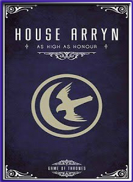
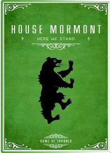

HOUSE OF ARRYN
La Casa Arryn del Nido de Águilas es la casa principal del Valle de Arryn y las Montañas de la Luna. Su asentamiento principal es el Nido de Águilas, pero tienen muchos otros asentamientos menores. Su linaje se extiende hasta la antigua nación de los Ándalos que invadió Poniente. Su emblema es una luna creciente y un halcón de plata en campo de cielo.[1] Su lema es Tan Alto como el Honor
HOUSE OF MORMONT
La Casa Mormont de Isla del Oso es una casa noble del Norte. Su asentamiento es la Isla del Oso, en la costa occidental del Norte. Su emblema es un oso de sable levantado sobre las patas traseras, sobre un bosque de sinople. Según fuentes semi canónicas, su lema es Aquí Aguantamos.
HOUSE OF GREYJOY
La Casa Greyjoy de Pyke es una de las grandes casas de Poniente. Es la principal casa de las Islas del Hierro, un conjunto de islas desoladas en la costa oeste de Poniente. Su asentamiento es Pyke, un castillo situado en la isla del mismo nombre. Su emblema es un kraken de oro sobre campo de sable. Su lema es Nosotros no sembramos.
HOUSE OF CLEGANE
La Casa Clegane fue una casa de caballería de las Tierras del Oeste y vasalla de la Casa Lannister de Roca Casterly. Su emblema son tres perros de sable sobre campo dorado. Nace por un caballero encargado de los perros de caza en Roca Casterly, que salvó a Lord Tytos Lannister de una leona, perdiendo una pierna en el proceso. Como recompensa, Lord Tytos le concedió tierras, una torre y tomó a su hijo como escudero. Su emblema son tres perros de sable sobre campo dorado; los cuales representan a los perros que murieron salvando a Lord Tytos. El fundador de la casa es el abuelo del cabeza actual de la Casa, Ser Gregor Clegane. Sus tierras se encuentran al sureste de Roca Casterly, las que gobierna desde una torre.
HOUSE OF LANNISTER
La Casa Lannister de Roca Casterly es la principal casa noble de las Tierras del Oeste. Su asentamiento es Roca Casterly. Su emblema es un león rampante de oro sobre campo de gules. Su lema es ¡Oye mi Rugido!, aunque su lema no oficial, Un Lannister siempre paga sus deudas, es más conocido.
HOUSE OF STARK

La Casa Stark de Invernalia es una casa noble del Norte. Su asentamiento es Invernalia. Durante siglos, fue la casa principal del Norte y su linaje se extiende hasta los Primeros Hombres, gobernando el Norte como reyes por derecho propio. Su emblema es un lobo huargo de cenizo corriendo sobre campo de plata. Su lema es Se acerca el Invierno. Su mandoble ancestral de acero valyrio se llamaba Hielo
HOUSE OF TYRELL
La Casa Tyrell de Altojardín es la casa gobernante del Dominio. Su asentamiento es Altojardín. Su emblema es una rosa en oro sobre campo de sinople. Su lema es Crecer Fuerte. Los Tyrell aseguran trazar su descendencia a través de la línea femenina del legendario Garth Gardener, el mítico primer Rey del Dominio que gobernó en la Edad de los Héroes, y el hijo del igualmente legendario Garth Manoverde. A diferencia de otras grandes casas, los Tyrell nunca gobernaron como reyes.
HOUSE OF TARGARYEN
La Casa Targaryen es una casa noble de ascendencia Valyria que escapó de la Maldición. Sus asentamientos eran la capital del reino Desembarco del Rey, la isla de Rocadragón y el castillo de Refugio Estival. Su emblema es un dragón de tres cabezas de gules en campo sable, representando a Aegon I y sus hermanas Rhaenys y Visenya. Su lema es Fuego y Sangre. Sus miembros vivieron durante siglos en la isla de Rocadragón hasta que Aegon Targaryen y sus hermanas montaron sus dragones y conquistaron seis de los Siete Reinos. Gobernaron Poniente durante casi 300 años hasta la Rebelión de Robert. Sus espadas ancestrales de acero valyrio, ambas en actual paradero desconocido, son Fuegoscuro y Hermana Oscura
HOUSE OF BARATHEON
La Casa Baratheon de Bastión de Tormentas es una casa noble de las Tierras de la Tormenta. Su asentamiento es Bastión de Tormentas, que fue residencia de la Casa Durrandon, los antiguos Reyes de la Tormenta. Su emblema es un venado coronado de sable sobre campo de oro. Su lema es Nuestra es la Furia
HOUSE OF TULLY
La Casa Tully de Aguasdulces fue la casa principal de las Tierras de los Ríos. Gobernaron la región como Señores Supremos del Tridente hasta la Guerra de los Cinco Reyes, tras la cual fueron despojados de sus títulos y tierras por rebelarse contra el Trono de Hierro. Su asentamiento fue, hasta 300 d.C., Aguasdulces. Su linaje se extiende desde la Edad de los Héroes como Señores de Aguasdulces. Su emblema es una trucha de plata, saltando sobre campo ondulado de azur y gules. Su lema es Familia, Deber, Honor.